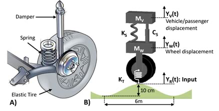
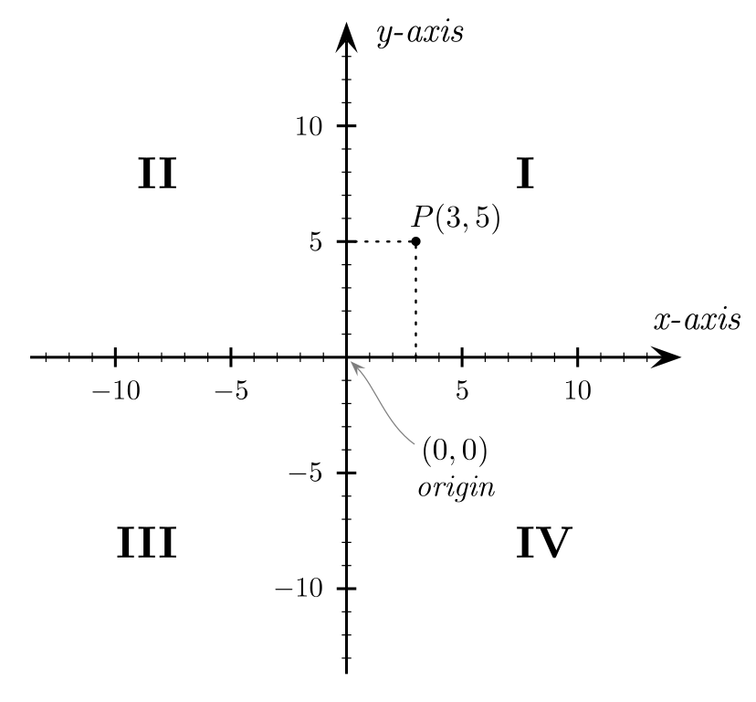

Day 22 - Damped Oscillations#

Shock absorbers are a type of damped oscillator.
They must be tuned to the weight of the car and the type of driving.
Announcements#
Homework 3 and Midterm 1 are being graded
Homework 5 is due on Friday
Homework 6 is posted
Seminars this week#
WEDNESDAY, March 12, 2025#
High Energy Physics Seminar, 10:00 am, BPS 1400 BPS, Shruti Paranjape, Brown University, Modern Methods to Understand Scattering Amplitudes
Astronomy Seminar, 1:30 pm, 1400 BPS, Jack Schulte & Sierra Casten, MSU, TBD
PER Seminar, 3:00 pm., BPS 1400, Camille Coffie, Lecturer, Department of Physics, Spelman College, Examining how pejorative stereotypes about students shape their experiences in physics graduate programs
FRIB Nuclear Science Seminar, 3:30pm., FRIB 1300 Auditorium, Professor Caryn Palatchi of University of Indiana, Bloomington, Precision Parity Violating Electron Scattering Experiments
Seminars this week#
THURSDAY, March 13, 2025#
Colloquium, 3:30 pm, 1415 BPS, Dong Lai, Cornell University,Hot Jupiters and Super-Earths: Spin-Orbit Dynamics in Exoplanetary Systems Refreshments and social half-hour in BPS 1400 starting at 3 pm
FRIDAY, March 14, 2025#
FRIB IReNA Online Seminar, 2:00pm., online via Zoom, Evan Kirby, University of Notre Dame, Primordial r-process dispersions in globular clusters https://msu.zoom.us/j/827950260 Password: JINA
Reminders#
We are solving the harmonic oscillator equation: $\(\ddot{x} + \omega_0^2 x = 0\)$
We have general solutions of the form:
We seek complex solutions of the form:
Reminders#
We denote a complex number in “Cartesian form” as:
Here, \(x\) is the real part and \(y\) is the imaginary part; both are real numbers.
The complex conjugate of \(z\) is:
Reminders#
We can also write a complex number in “polar form” as:
where \(A\) is the magnitude of the complex number and \(\delta\) is the phase. Both are real numbers.
The complex conjugate of \(z\) is: $\(z^* = \bar{z} = Ae^{-i\delta}\)$
Reminders#
The product of a complex number and its complex conjugate is:
The sum of a complex number and its complex conjugate is:
The difference of a complex number and its complex conjugate is:
Clicker Question 22-1#
A complex number \(z\) is plotted in the complex plane such that \(z\) lies in the second quadrant.

Where does the complex conjugate \(z^*\) lie?
In the first quadrant.
In the second quadrant.
In the third quadrant.
In the fourth quadrant.
Ignore the marked point in the figure.
Visualizing the Complex Solution#
We constructed a solution of the form:
We can plot it in the complex plane and see the real and imaginary parts, and how they change in time.
Visualizing the Complex Solution#
We can plot the solution on the complex plane. For this, \(\delta = \pi/4\), and the amplitude is \(A=1\).
The solution rotates counterclockwise in the complex plane, following the rainbow from violet to red.

Projecting the Real Solution#
The real part is just the projection of the complex solution onto the real axis. Just how far along the real axis is the solution at any given time.
That looks like a time trace, but not quite, it’s the real projection. The colors scheme is the same as before.

The Time Trace of the Solution#
We just flip the axes to produce the time trace that you are used to seeing. The color scheme is the same as before.

Table Activity 22-2#
We constructed a solution for the weakly damped harmonic oscillator:
where \(\omega_1 = \sqrt{\omega_0^2 - \beta^2}\).
What is the physical meaning of \(\beta\)?
Sketch this solution, you can choose parameters, or just roughly sketch it.
What happens to the amplitude of the solution as time goes on?
Can you describe the mathematical “envelope” of the solution?
What is the physical meaning of this envelope?
Click when you and your table are done.